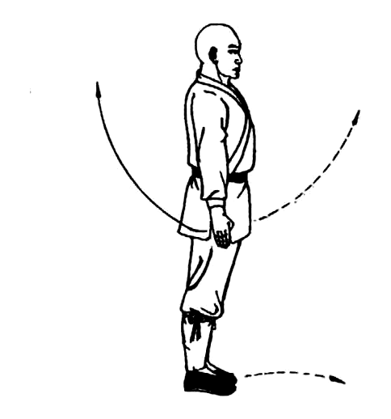
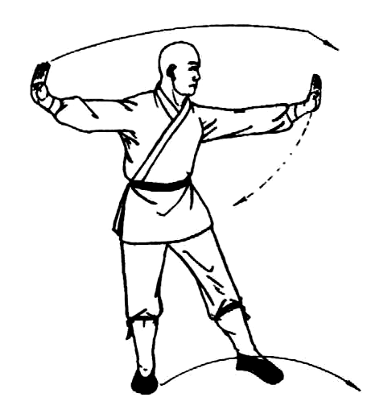
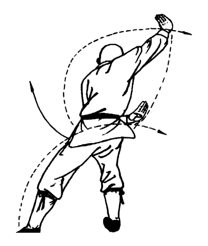
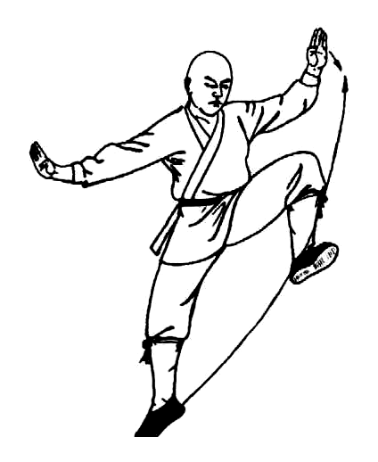
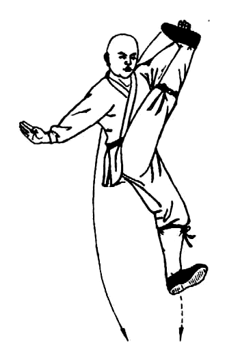
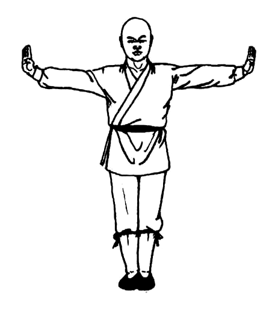

Step 1
Step into the turn
Action
Step the left foot forward and turn the body right as the arms open into the illustrated preparation.
Key point
Keep the head level and the floor clear before rotating.





